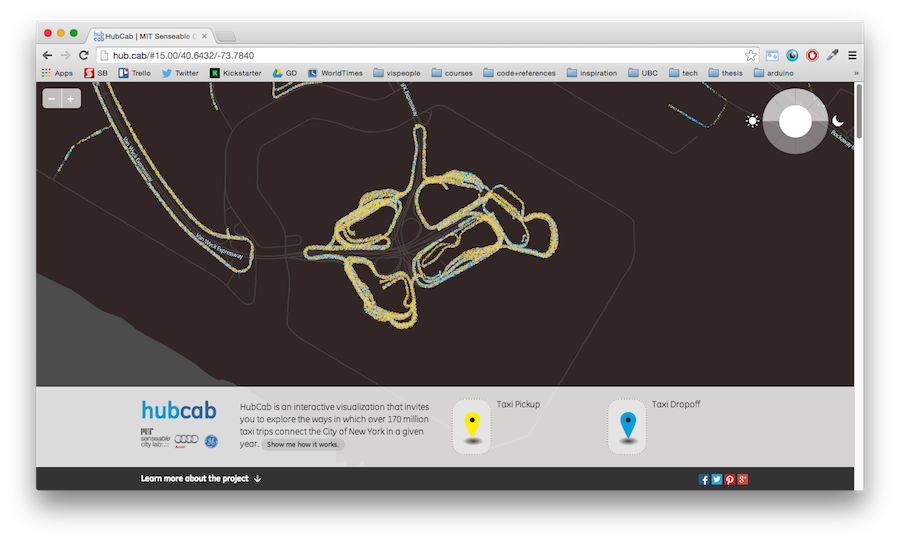
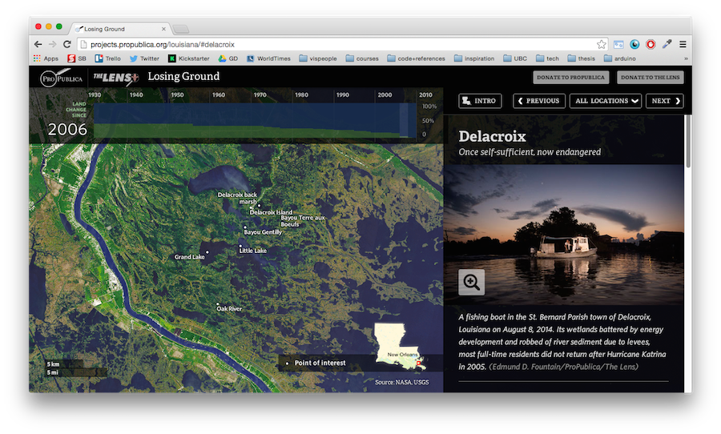
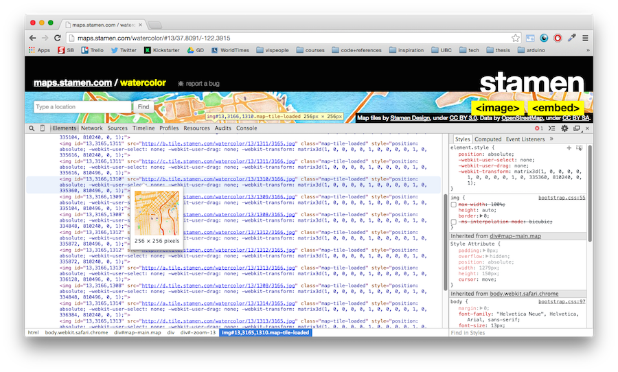
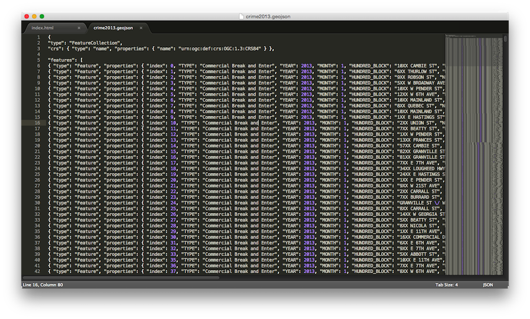
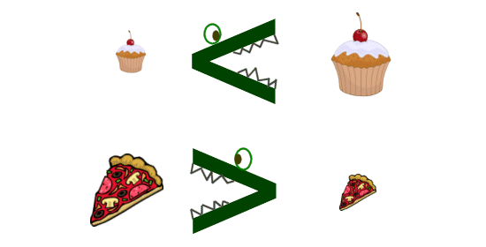
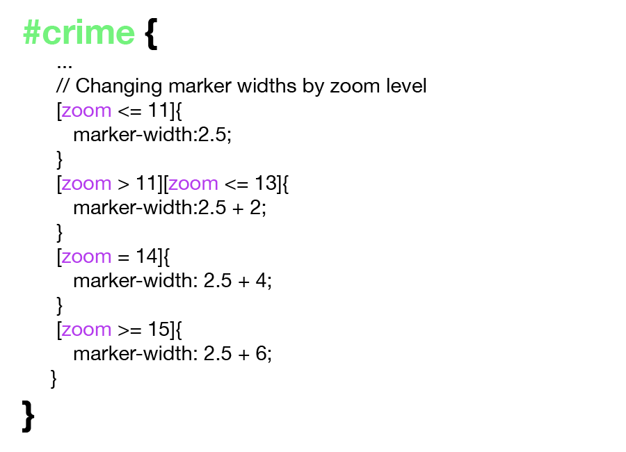
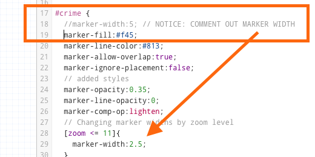
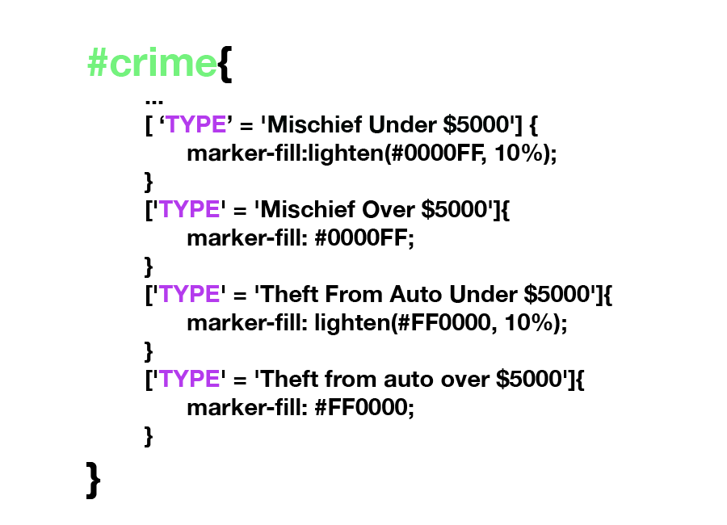
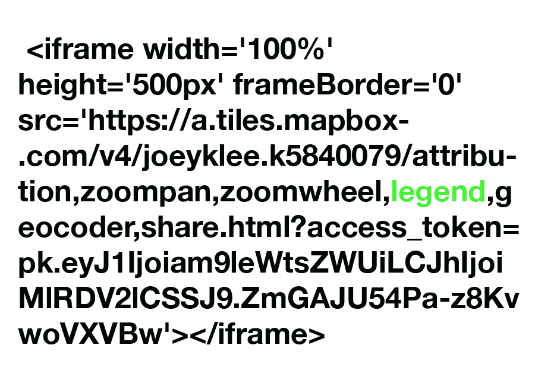

"Let's make an interactive map for the web"
With: Joey Lee
*Thanks Lyzi Diamond for your help!
Hello, Hi
Who am I?
San Francisco, Ca, USA
MSc Department of Geography (2015)
Geography
Critical Cartography | Remote sensing
Data Visualization | Smart Cities | Urban climates
Skateboarding | Cycling | Making Digital Things
Why make interactive web maps?
Interactive maps are powerful for visualization , presentation, sharing, and communication
Using & abusing the web browser to allow exploration and enhance relevancy
What are the tools ?
Lots out there, but some big ones:
Non web based interactive map making worth checking out:
We will focus on Tilemill & Mapbox today :)
Just a few example projects
Boston 311
(My first Tilemill Project!)


Hubcab: Exploring New York City taxi trails and sharing our way to a more sustainable urban future


Community Energy Explorer

Ferguson, Mo Tweets


Losing Ground: Louisianna is Sinking


Computers are friends...
...and google searching is your best friend
*The answer to most (all?) of your questions are somewhere on the web!
Before Getting Started
What makes a web map ?
1. Maptiles*,
2.Geodata / Feature Layers
3. "The Web"
1.Maptiles *
*This isn't always the case, but for simplicity, let's just assume so :)
"... web maps are made out of many small square images called
tiles"
"These tiles are typically 256x256 pixels and placed sided-by-side in order to create the illusion of a seamless image."
See: They are just little images cleverly stitched together!


Thanks @lyzidiamond & Mapbox for the info!
Oh! So that's how GoogleMaps works? Yeah!
2.Geodata / Feature Layers
"Feature layers are map layers that live on top of your base tiles. Sometimes you can interact with them (clicking to produce a popup, for example). "
Feature layers are typically geospatial datasets such as...
GeoJSON, Shapefiles, & CSV
GeoJSON & Shapefiles
Imagine: Spreadsheet + Polygons in geospace


Probably your most common geospatial data types. We <3 geojson!
CSV
(comma separated values)
Basically: Spreadsheet

Note: we can directly upload a .csv file into Tilemill if it includes columns with latitude & longitude coordinates
The cool thing is, we can render Feature layers as tiles or as vector (svg) depending on our needs, the sizes of our data, etc.
Today, we will render Feature Layers as Tiles!
3. "The Web"
With web maps, the power to zoom, pan, toggle, click, drag, etc. comes from the friendly "web stack" of HTML, CSS, and Javascript.
While the web stack is indeed a magical combo, today let's not worry about those gritty details.
Instead, let's let Tilemill and Mapbox work their magic and help us build our first interactive we map.
Getting Started
(Corresponds to
Tutorial I in the workshop github repo.)
+ Fire up Tilemill
+ Create a [new project]

+ Add project name

+ Tilemill Interface
+ CartoCSS

Basic CartoCSS Anatomy

*Points, lines, and Polygons will have different properties for styling
Basic CartoCSS Anatomy: Example

*Notice the "marker-fill" property? That's a "hex color code"
+ Add a
Layer


+ Check settings
+ Adjust
Bounding Box &
Zoom levels


+ Adjust Marker
style


What we changed

The double forward slashes (//) create a comment. These are "invisible" to Tilemill and are helpful for making notes on your stylesheet.
+ Comment out "World Layers" using
/* */


+ Adding Tooltips

1. Click "pointer" icon, 2. Click "teaser, 3. toggle "disabled" to "crime"
+ Adding Tooltips

The Mustache tags '{{{ }}}' reference the named columns in the data, making them accessible on mouse hover.
+ Adding Tooltips

We introduce the linebreak tags <br> to separate the data onto new lines.
+ Wow! Cool Tooltips!


Let's export our map!
+ Export and Upload!


Enter Mapbox
+ Start a new Mapbox Project


+ Start a new Mapbox Project


+ Configuring the baselayer


NOTE: You will have to zoom in and out and pan/zoom to Vancouver
This is cool, but let's style the baselayer a bit.
+ Styling the baselayer


Hide Layers, adjust colors, & have fun!
And drumroll...
Now take the embed code and put it on your blog!
You just made your first map!
So what have we learned so far?
We've been introduced to Tilemill & Mapbox...
... the very basics of geospatial data...
.. We know a bit about CartoCSS, setting the bounding box, and zoom levels...
... and finally how to overlay a dataset onto a Mapbox baselayer.
Wow! So many new things!
Lucky for you, it's not over!
Let's take our map further by:
1. Scaling the marker size at different zoom levels, 2. styling data with different values, & 3. adding a legend.
Ooh, How fun!
(Corresponds to
Tutorial II in the workshop github repo.)
Ready, go!
Overview:

1. Scaling the marker size at different zoom levels
Remember the inequality signs?

Let's use them to set the zoom levels like this:

Don't forget to "//" comment out the original marker-width
Now that we style marker-size at different zooms, remove the 'global' one!

Now zoom in and out, notice the points scale better and are more visible?
2. Styling data based on their value
Before, all of our crimes were one color...

But now, we'll color each crime differently:

First things first, what is name of the field that contains the crime type?
Check the data table!


Simple enough, it is just called "TYPE'
Now we can reference each 'TYPE' by its specific value like this:

Notice:
lighten('hexcolor', '%')
we can also do: darken()
If we styled everything alright then we should get...
RGB disco!

Where crimes of different types overlap - we get color blending!
HOW EXCITING!
3. Adding a legend
Because we have a fancy thing going on here, let's cue viewers into what they're seeing.
In Tilemill, there are 2 ways to add a legend
1. By making a legend in an image making environment (e.g. photoshop) and adding the png OR
2. By using html & css in Tilemill to create a simple legend
For today, we will just use a png image made in Photoshop as our legend
Essentially the main steps are:
1. Create your legend as a png
2. Convert the png to a base64-encoded image
3. <img> src='data:image/png;base64,[image-data]' />
4. Paste #3 into the "legend" content box
Now upload to mapbox!
Before embedding to your blog or webpage...
Legends aren't referenced by default in the embed code, so we have to add it in manually


And now, map disco!
Not to rain on the parade but some last things to consider:
mousehover issues? color issues? data accuracy issues? - all nontrivial things
Major takeaway: You can make a web map!
I hope you had a blast! Happy Mapping!
Special thanks to:
@sarahmprz,
@mappingmashups,
@lyzidiamond,
the Geoweb community,
Terreweb,
UBC Geography,
And YOU!
Questions? Comments?
Open lab time